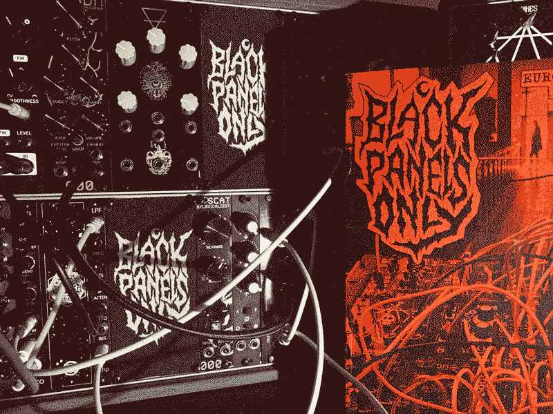
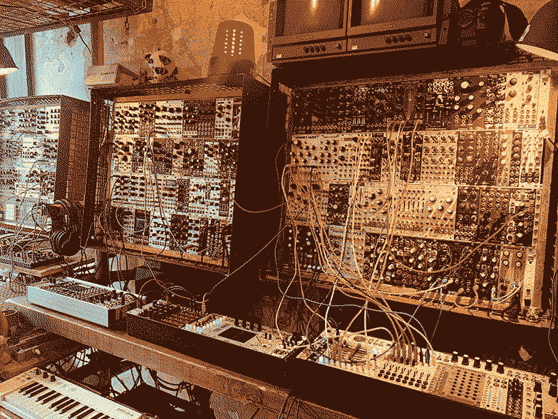
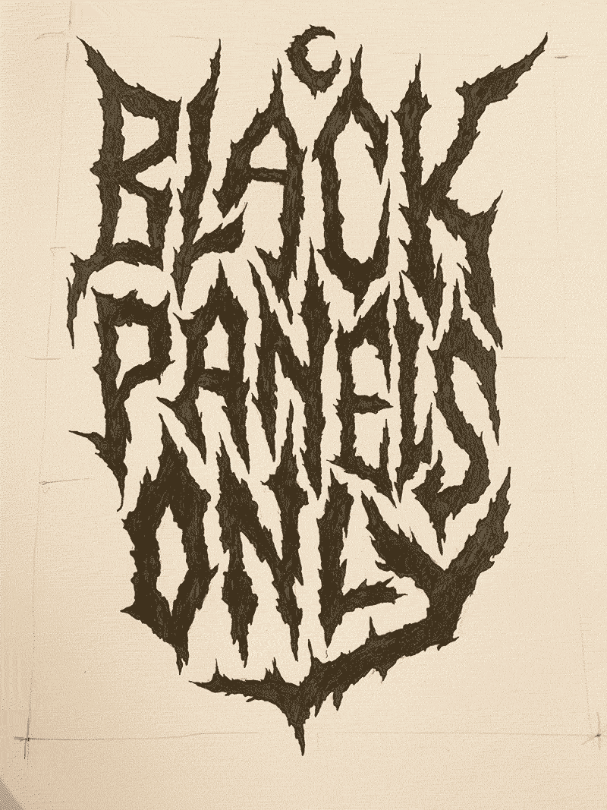

Issue I

This was perhaps the easiest issue to do because I had a completely blank canvas to start from- no worries about trying to balance consistency and freshness- I could just reach out to my favourite makers and artists and embrace the overall aesthetic I was going for. I was honoured that pretty much everyone I asked said yes and was up for answering my questions. I featured the local synth shop in Bristol Elevator Sound because they’re awesome and do loads of cool events for the community and I want to include interviews from other parts of the scene, not only artists and module makers. I stopped by Elevator Sound to take some photos of their racks to accompany the interview which was fun, made me feel a bit like a proper journalist for a moment. I included some digital music reviews- some cool recent modular releases that I found on bandcamp. For future issues I decided I’d stick to tape reviews as it fits the vibe of the zine better.

I had the idea to make some screen printed canvas patches with the logo on at the same size as a 12hp panel. Knowing that the material for band patches can be a bit stiff, I hoped that by punching wholes in the corners, it’d work as a blank panel and totally fit the punk/metal style of the zine. I made it available with or without holes so it could be sewn on as a normal patch if people wanted. I don’t know how many people in the modular scene are rocking battle jackets and have no idea if anyone has actually sewn one onto anything but I liked the idea of the dual function anyway.
For the blank panel version, I added 3mm eyelets to the corners as I figured it would make screwing them in a bit more durable and it kinda worked but was a bit too close to the screw size and could be a bit fiddly and actually worked better with just holes punched. They’re still a bit fiddly to install so I can see why people don’t tend to make blank panels out of flexible material. Still I think it was pretty cool so I think I ought to do some more in future.
The cover photo is my rack taken while setting up at my first modular gig in a church in Bristol. I thought it’d be a good image as it had a bundle of spaghetti patch cables and there’s a silhouette of Ellen from Dead Space Chamber Music in the doorway in the background which looks a bit creepy. I think it was the first page I did when coming up with the idea for the zine- I was enjoying figuring out ways to process images to try to get a photocopy effect. For this one I converted the image to a duo-tone bitmap so that there’s only black and red- no greys. I think I messed it up on the first print and ended up with some grey tones as I must’ve reduced the image slightly. Overall I'm super happy with how this one turned out.
This is the logo in its raw form. I think I did slightly above A4 size and I don't think I even scanned it in- just processed it straight from this phone photo:

Released 9th March 2020.
Features:
- ERD
- Serpens Modular
- Error Instruments
- Blood & Dust
- TL3SS
- Elevator Sound
- My Rack - Tommy Creep
- How to get started with Modular
- Reviews: David Fyans, Lateral AM, Phase 47